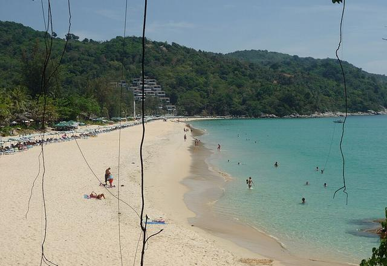
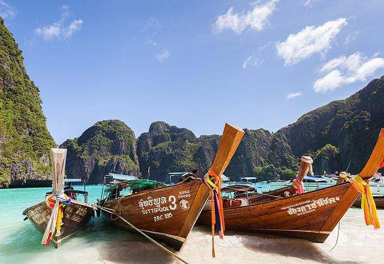
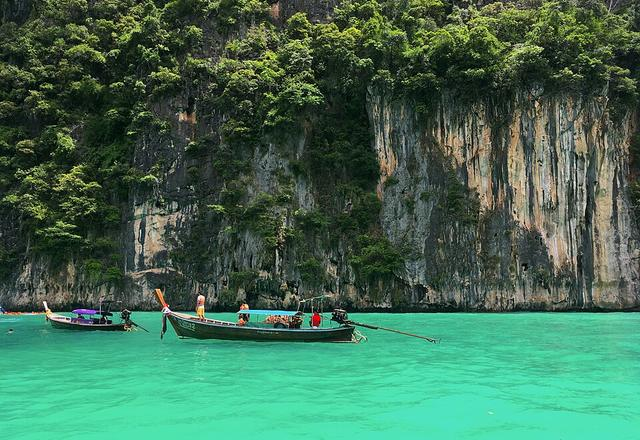
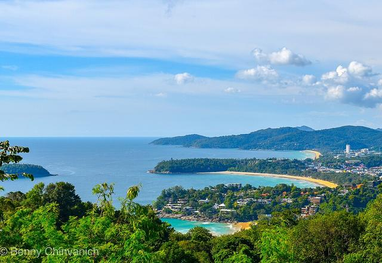
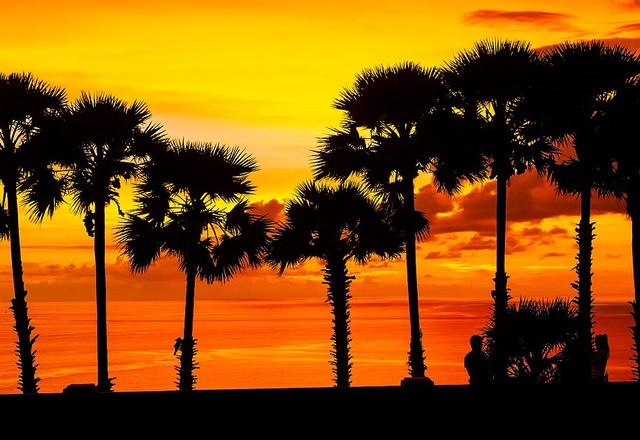
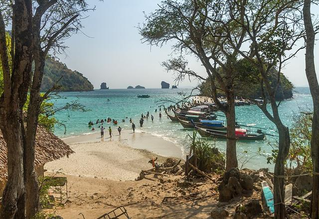
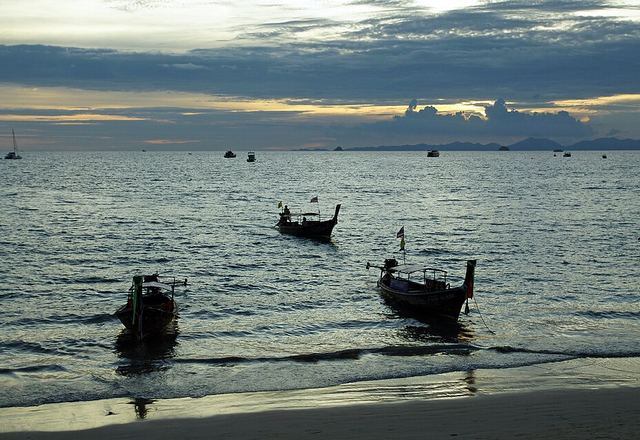
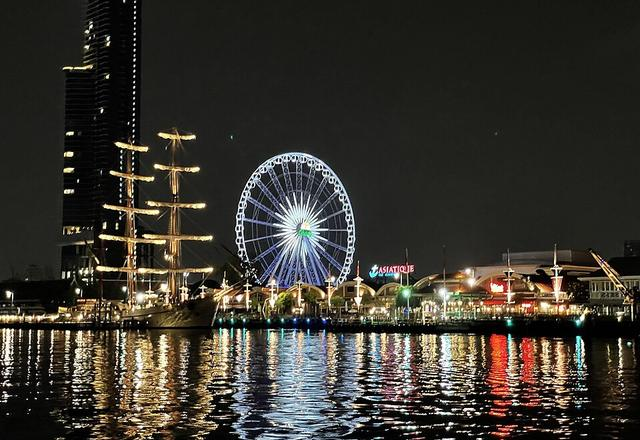
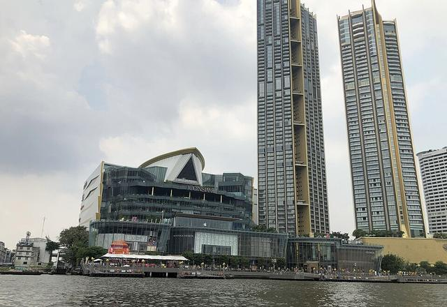

Phuket, Krabi & Bangkok in 10 days
A relaxed, safe, vegetarian-friendly trip for two, planned hour by hour with at least 7 hours of sleep every night. You get dropped at and picked up from Mumbai airport, so that leg isn't counted in the cost.
The route
All times below are Thailand time, which is 1h 30m ahead of India. Flight times are examples. Once you book, shift the first and last day to match your tickets. Sunset is around 6:25 pm in Phuket and Krabi, and 6:10 pm in Bangkok.
Hour-by-hour plan
Every "Photos" link opens a Google Images search in a new tab.
Phuket · Kata Beach
Beaches, islands, massageDay 0 Thu 14 Jan · India time
Sleep tip: if you find a daytime Mumbai → Phuket flight at a similar price, take it. You'll arrive rested, and Day 1 simply starts later.
Day 1 Fri 15 Jan · Arrival
Nap 4 h + night 8.5 h
Day 2 Sat 16 Jan · Phi Phi Islands
9.5 h sleep

Day 3 Sun 17 Jan · Big Buddha & Promthep Cape
8.5 h sleep


Krabi · Ao Nang
Cliffs, islands, slow daysDay 4 Mon 18 Jan · Ferry to Ao Nang
9 h sleep
Day 5 Tue 19 Jan · 4 Islands tour
9.5 h sleep

Day 6 Wed 20 Jan · Railay Beach
8.5 h sleep

Bangkok · Sukhumvit
Temples, river, markets, easiest veg foodDay 7 Thu 21 Jan · Fly to Bangkok, river evening
8.5 h sleep
Day 8 Fri 22 Jan · Grand Palace, Wat Pho, Wat Arun
9 h sleep


Day 9 Sat 23 Jan · Chatuchak & ICONSIAM
9 h sleep

Day 10 Sun 24 Jan · Fly home
Where to stay (saver picks)
Well-rated, clean, safe 3–4 star hotels in good locations. Book rates with breakfast included and free cancellation. Prices are rough January estimates per night. Check current rates on Agoda or Booking.
Sugar Marina Resort – Art, Kata
≈ ₹4–5k / nightGood value, a short walk to Kata Beach and restaurants.
+ ₹1.5–2k a night: Chanalai Romantica (adults only, veg breakfast).
BlueSotel SMART Krabi Aonang
≈ ₹3.5–5k / nightAdults only, close to Ao Nang's beach and the Indian restaurants.
+ ₹3–4k a night: Avani Ao Nang Cliff (rooftop pool).
Holiday Inn Express Sukhumvit 11
≈ ₹4.5–5.5k / nightBreakfast included. On the street with the most Indian veg restaurants, near Nana Skytrain station.
+ ₹2–3k a night: Aloft Sukhumvit 11 (same street, rooftop pool).
Budget for two
| Item | How it's kept low | Before | Saver plan |
|---|---|---|---|
| Flights: Mumbai → Phuket, Bangkok → Mumbai | Book this month, light baggage, compare the Bangkok option below | ₹50,000 | |
| Flight: Krabi → Bangkok | AirAsia or Thai Lion, 15 kg shared bag | ₹5,000 | |
| Hotels, 9 nights with breakfast | Saver picks above | ₹39,000 | |
| Tours & entry fees | Join-in tours, longtail boats, local massage, no paid cruise | ₹23,000 | |
| Ferry & local transport | Grab, Skytrain, free shuttle boats | ₹15,000 | |
| Vegetarian lunch & dinner | ≈ 900 THB a day for two: local veg Thai, food courts, Indian some nights | ₹23,000 | |
| Insurance, one eSIM, tips | Share one eSIM's hotspot | ₹5,000 | |
| Total | ≈ ₹1.60 L |
Shopping isn't included. Rates use roughly ₹2.6 per Thai baht. The transport line went up a little because the earlier figure undercounted Grab rides between sights.
Cut more if needed
- Fly Mumbai ⇄ Bangkok return, then a cheap AirAsia flight Bangkok → Phuket on arrival day. Often ₹5–10k less for two. Leave a 4-hour gap between flights.
- 9 days instead of 10 (Bangkok 2 nights): saves ≈ ₹7k.
- Minivan instead of ferry to Krabi: saves ≈ ₹1k, but it's less scenic.
- Realistic floor for this 3-city plan: ≈ ₹1.45–1.5 lakh.
Lowest-cost alternative
- Skip Bangkok: Phuket 3N + Krabi 3N, 7 days.
- Fly into Phuket and back from Phuket (2.5-hour drive from Ao Nang, ≈ 2,000 THB by car).
- Estimate: ≈ ₹1.15–1.25 lakh for two.
- Trade-off: no temples or shopping, and fewer easy veg-food options.
Places you'll see
More photos of each place: use the "Photos ↗" links in the day plan.
Vegetarian food guide
Say this
- Gin jay กินเจ: I eat "jay" (vegan: no meat, egg or fish sauce, often no onion or garlic)
- Mai sai nuea sat ไม่ใส่เนื้อสัตว์: no meat
- Mai sai nam pla ไม่ใส่น้ำปลา: no fish sauce
- Mai sai khai ไม่ใส่ไข่: no egg
- Mai phet ไม่เผ็ด: not spicy
Look for yellow flags with red Thai letters (เจ). They mark vegan "jay" food stalls.
Safe orders
- Pad pak ruam: stir-fried mixed vegetables
- Pineapple or vegetable fried rice (say no egg if needed)
- Pad Thai jay: tofu, no fish sauce, no egg
- Mango sticky rice, coconut ice cream, fresh fruit
Apps: HappyCow (veg restaurants near you), Google Translate with Thai downloaded for offline use, Grab (taxis and food delivery).
Money
US dollar account
- Thai money changers such as SuperRich and Vasu give very good rates for USD cash. Bring clean, undamaged $100 or $50 notes.
- A US debit card works well at ATMs if your bank charges no foreign transaction fee. Thai ATMs charge ≈ 220 THB per withdrawal, so take out larger amounts less often.
INR side
- A forex card or a zero-markup credit card works for hotels and malls. Normal Indian cards add about 3.5% plus GST on foreign payments.
- Book flights and hotels directly. A package tour bought from an Indian agent may attract TCS (tax collected at source) upfront.
This is general travel-money information, not financial advice.
Booking checklist
Ticks are saved in this browser only.
Now · by 30 Nov 2026
By 15 Dec 2026
Early January 2027
12–14 Jan 2027
Packing & safety
Pack
- Light cotton clothes, swimwear, a cover-up
- One modest outfit each for temples (shoulders and knees covered)
- Reef-safe sunscreen, sunglasses, a hat
- Waterproof phone pouch, flip-flops, a light dry bag
- Thai sockets take Indian two-pin plugs; a universal adapter is safer
- Basic medicines (motion sickness tablets for boats)
Stay safe
- Use Grab or Bolt instead of street tuk-tuks.
- Don't rent scooters without an International Driving Permit. Insurance won't cover accidents.
- Skip jet-ski rentals, which are a common damage scam.
- Swim only where there are flags and lifeguards.
- Keep passports in the hotel safe and carry copies.
| Emergency | Number |
|---|---|
| Tourist Police (speaks English) | 1155 |
| Ambulance | 1669 |
| Embassy of India, Bangkok | +66 2 258 0300 |
Photo credits
Photos from Wikimedia Commons, cropped and resized. Licences: CC BY, CC BY-SA or public domain.
aonang: Ao Nang beach panorama 3.jpg by kallerna, CC BY-SA 3.0
asiatique: Asiatique, Bangkok from Chao Phraya River 2.jpg by Slyronit, CC BY-SA 4.0
bigbuddha: The Big Buddha, Phuket.jpg by Subhrajyoti07, CC BY-SA 4.0
chatuchak: Chatuchak Weekend Market 2.jpg by Christophe95, CC BY-SA 4.0
grandpalace: Wat Phra Kaew by Ninara TSP edit crop.jpg by Original image: Ninara from Helsinki, Finland. Edit: TSP, CC BY 4.0
hero: Phi Phi Island Long Boats by Don Ramey Logan.jpg by Don Ramey Logan, CC BY 3.0
iconsiam: Approaching Iconsiam from Chao Phraya River, Bangkok.jpg by Slyronit, CC BY-SA 4.0
karonview: Phuket Aerial.jpg by Bennypc, CC BY-SA 4.0
kata: Phuket - Kata Beach 001.jpg by ADwarf, Public domain
mayabay: Playa Maya, Ko Phi Phi, Tailandia, 2013-08-19, DD 13.JPG by Diego Delso, CC BY-SA 3.0
phranang: Phra_Nang_beach_28.jpg by kallerna, CC BY-SA 3.0
pileh: A Long-tail Boat in Pileh Lagoon, Phi Phi Le.jpg by Puripant, CC BY-SA 4.0
promthep: Beautiful Sunset on Promthep Cape, Phuket island, Thailand.jpg by Phuket@photographer.net, CC BY 2.0
railay: Railay Beach 5.jpg by kallerna, CC BY-SA 3.0
sunset: Ao_Nang_beach_5.jpg by kallerna, CC BY-SA 3.0
tup: 2016-04-14 Tup Island, Krabi Province 1.jpg by Maksym Kozlenko, CC BY-SA 4.0
watarun: Templo Wat Arun, Bangkok, Tailandia, 2013-08-22, DD 37.jpg by Diego Delso, CC BY-SA 3.0
watpho: Wat Pho, Bangkok, Tailandia, 2013-08-22, DD 06.jpg by Diego Delso, CC BY-SA 3.0